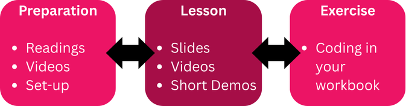

knitr::include_graphics("https://quarto.org/quarto.png")

Today you are going to understand how this modules works.
First, this is a asynchronous module delivered in using the concept of FLEXI modules held by NTU. The idea of having an assynchronous module for teaching stats and research methods makes sense because you’ll need time to read and train both before and after the each main session and tutorials.
These comprise the slides and videos recorded by the tutor and intriduce the oibjectives, learnign outcomes and some demonstrations.
Quarto is a powerful tool for creating dynamic documents and websites. This tutorial will guide you through the process of creating a simple webpage using Quarto.
Before you begin, make sure you have the following installed:
Open your terminal or command prompt.
Navigate to the directory where you want to create your webpage.
Run the following command to create a new Quarto document:
quarto create webpage.qmdThis command creates a file named webpage.qmd.
Open webpage.qmd in your text editor.
You’ll see some default content, including a title and some example text.
Modify the content to create your webpage. For example:
---
title: "My First Quarto Webpage"
format: html
---
## Welcome!
This is my first webpage created with Quarto.
Here's a simple list:
* Item 1
* Item 2
* Item 3
You can also include code blocks:
::: {.cell}
```{.r .cell-code}
print("Hello, Quarto!")[1] "Hello, Quarto!":::
And mathematical equations:
\[ E = mc^2 \]
You can add images too:
knitr::include_graphics("https://quarto.org/quarto.png")
```
Explanation of the code:
--- title: "My First Quarto Webpage" format: html --- : This is the YAML header, which sets the title of your webpage and specifies the output format (HTML in this case).## Welcome! : This is a level 2 heading.* Item 1 : This creates a bulleted list.{r}: This begins a R code block.$$E = mc^2$$: This inserts a LaTeX equation.{r}: This begins an R code block.knitr::include_graphics("https://quarto.org/quarto.png"): This includes an image from a URL.In your terminal or command prompt, navigate to the directory containing webpage.qmd.
Run the following command to render the webpage:
quarto render webpage.qmdThis command will create an HTML file named webpage.html in the same directory.
webpage.html in your web browser.You can add more content to your webpage by editing webpage.qmd. Quarto supports various types of content, including:
#, ##, ###, etc. for different heading levels.* or - for unordered lists, and 1., 2., etc. for ordered lists.{language} to insert code blocks.$$ for LaTeX equations. or {r} knitr::include_graphics("path/to/image.png").[link text](url).Know how to publish your Quarto webpage to Quarto Pub, making it accessible online.
If you haven’t already created a Quarto webpage, follow the steps in the previous tutorial to create webpage.qmd and render it into webpage.html.
Open your terminal or command prompt.
Navigate to the directory containing webpage.qmd.
Run the following command to initialize Quarto Pub:
quarto publish quarto-pubThis command will prompt you to log in to your Quarto Pub account. Follow the instructions to authenticate.
webpage.html file and ask you if you want to publish it.If you edit the webpage.qmd file, you will need to re-render the html file, and then republish.
Edit webpage.qmd with your text editor.
Render the html file again.
quarto render webpage.qmdRepublish the webpage.
quarto publish quarto-pubQuarto Pub will update the existing webpage with the new content.
Now create your own quarto workbook:
1 - Download the zip file of the project
2- Tweak the *qmd file as you wish
3 - Publish your workbook
4 - Submit to the link to NOW dropbox folder